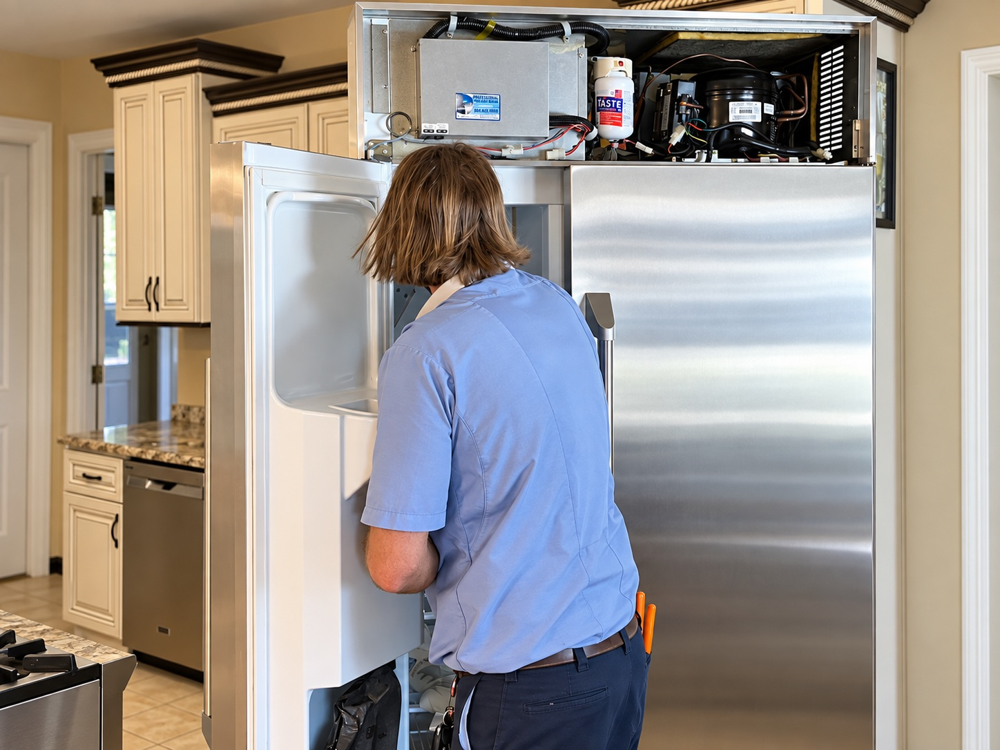
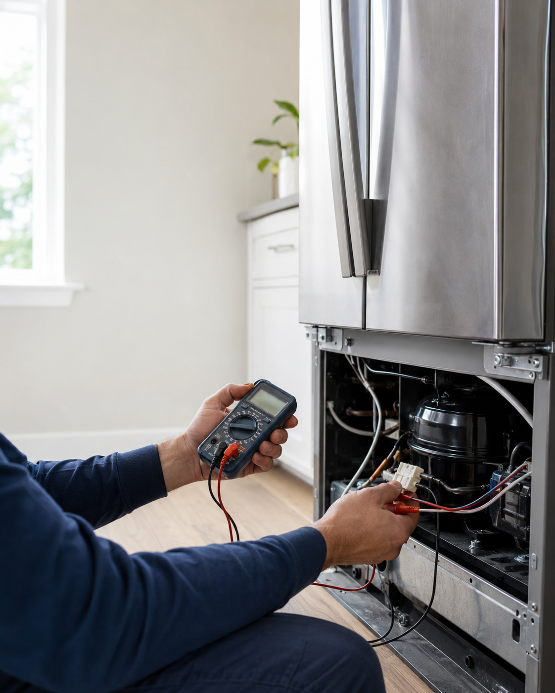

Share the concern
Tell PAR which appliance needs attention and what you have noticed.
When a refrigerator changes temperature, makes an unfamiliar sound, or stops making ice, the next step should feel clear.

These are useful starting points for a service conversation, not a diagnosis.
The service story starts with careful observation, a clear explanation, and a practical path forward. The image shows a real visit; the exact work shown should not be taken as a diagnosis for every appliance.
Start a request
Use a calm, clear sequence to help customers prepare for a service visit.
Tell PAR which appliance needs attention and what you have noticed.
Have the brand, model, and any error message ready if available.
Use the visit to understand the issue and the recommended path forward.
The appliance brand and model, the symptoms you have noticed, and when the issue began are useful starting points.
This concept page includes built-in refrigerator service. Confirm current model coverage with PAR before publishing specific service promises.
Share what you are seeing and make the service request simple.